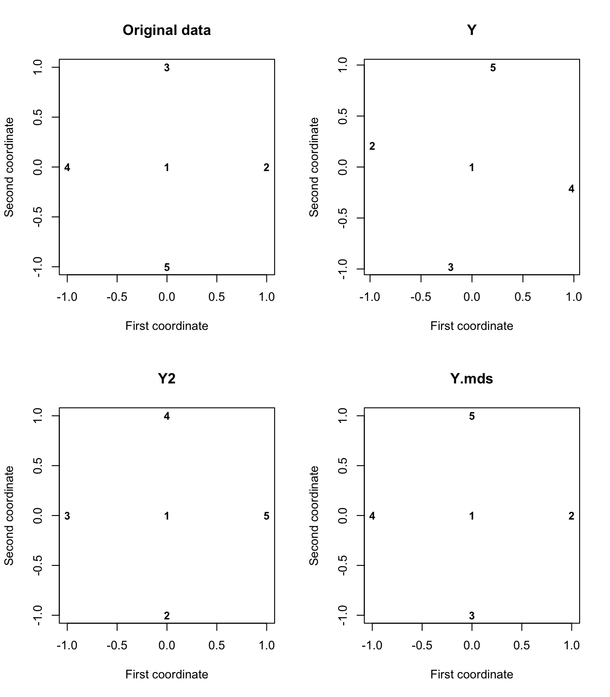
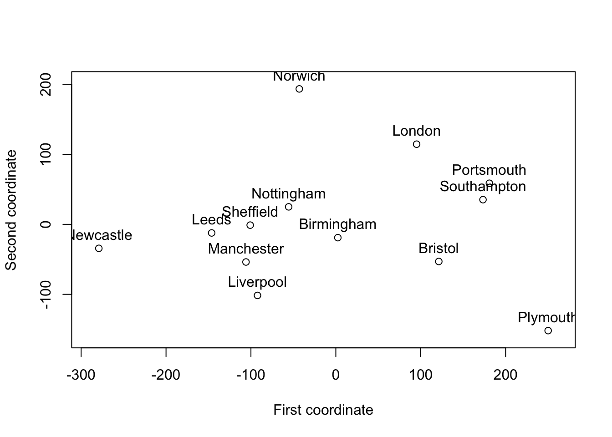
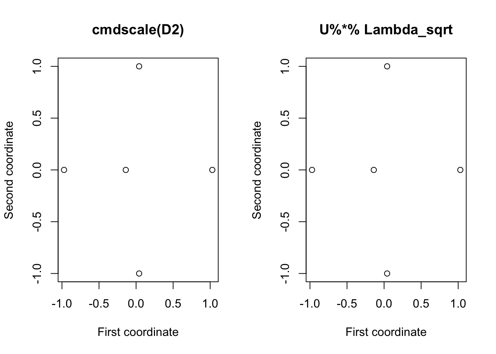

6.1 Classical MDS
Classical MDS is based upon Euclidean distances: \[d(\mathbf x, \mathbf x') = ||\mathbf x-\mathbf x'||_2 = \sqrt{(\mathbf x-\mathbf x')^\top (\mathbf x-\mathbf x')}.\]
Since Euclidean distances satisfy the triangle inequality (6.2), it follows that Euclidean distance is a metric distance. In general, any distance derived from a norm is a metric distance.
In classical MDS, we don’t work directly with the distance matrix, but with the centred inner product matrix.
Definition 6.3 Given a distance matrix \({\mathbf D}=\{d_{ij}\}_{i,j=1}^n\), the centred inner-product matrix (also called the centred-Gram matrix) is \[\begin{equation} {\mathbf B}={\mathbf H} \mathbf A{\mathbf H}, \tag{6.3} \end{equation}\] where \(\mathbf A\) is the matrix of negative square distances divided by two: \[\begin{equation} \mathbf A=\{a_{ij}\}_{i,j=1}^n, \quad \text{where} \qquad a_{ij}=-\frac{1}{2}d_{ij}^2 \tag{6.4} \end{equation}\] and \(\mathbf H\) is the \(n \times n\) centering matrix (see Section 2.4).
Another way of writing \(\mathbf A\) is as \[\mathbf A= -\frac{1}{2}\mathbf D\odot \mathbf D\] where \(\odot\) denotes the Hadamard (or element-wise) product of two matrices.
We can think of \(\mathbf B\) as a matrix of similarities for the data. The reason for this, and for why we call \(\mathbf B\) the centred inner product matrix will become clear after we state the main result of this chapter.
Main result
We now present the key result for classical MDS. It says that a distance matrix \(\mathbf D\) is a Euclidean distance matrix if and only if the corresponding centred inner product matrix \(\mathbf B\) is positive semi-definite. It also tells us how given data \(\mathbf X\) we can compute \(\mathbf B\) directly from \(\mathbf X\). Conversely, and more importantly, it tells us how given \(\mathbf B\) we can compute some data points \(\mathbf X\) that have corresponding Euclidean distance matrix \(\mathbf D\).
Theorem 6.1 Let \(\mathbf D\) denote an \(n \times n\) distance matrix with corresponding centred inner-product matrix \(\mathbf B=-\frac{1}{2}\mathbf H(\mathbf D\odot\mathbf D)\mathbf H.\)
If \(\mathbf D\) is a Euclidean distance matrix for the sample of \(n\) vectors \(\mathbf x_1,\ldots , \mathbf x_n\), then \[\begin{equation} \mathbf B= ({\mathbf H} {\mathbf X})({\mathbf H} {\mathbf X})^\top. \tag{6.5} \end{equation}\] Thus \(\mathbf B\) is positive semi-definite.
Suppose \(\mathbf B\) is positive semi-definite with eigenvalues \(\lambda_1 \geq \lambda_2 \cdots \geq \lambda_k > 0\) and that it has spectral decomposition \(\mathbf B={\mathbf U} {\pmb \Lambda}{\mathbf U}^\top\), where \({\pmb \Lambda}=\text{diag}\{\lambda_1 \ldots \lambda_k\}\) and \(\mathbf U\) is \(n \times k\) and satisfies \({\mathbf U}^\top {\mathbf U}={\mathbf I}_k\). Then \[{\mathbf X}=[\mathbf x_1, \ldots , \mathbf x_n]^\top={\mathbf U}{\pmb \Lambda}^{1/2}\] is an \(n \times k\) data matrix which has Euclidean distance matrix \(\mathbf D\).
Moreover, for this data matrix \(\bar{\mathbf x}={\mathbf 0}_k\) and \(\mathbf B\) represents the inner product matrix with elements given by (6.5).
For part 1. we may equivalently write \[\begin{equation} b_{ij}=(\mathbf x_i-\bar{\mathbf x})^\top (\mathbf x_j - \bar{\mathbf x}), \qquad i,j=1,\ldots , n, \end{equation}\] where \(\bar{\mathbf x}=n^{-1}\sum_{i=1}^n \mathbf x_i\) is the sample mean vector. This illustrates why we call \(\mathbf B\) the centred inner-product matrix: \(\mathbf H\mathbf X\) is the centred data matrix, and \((\mathbf H\mathbf X)(\mathbf H\mathbf X)^\top\) thus contains the inner product of each pair of centred vectors.
We think of \(\mathbf B\) as a matrix of pair-wise similarities between the data points. The inner product \[\langle \mathbf x_i-\bar{\mathbf x}, \;\mathbf x_j - \bar{\mathbf x} \rangle=(\mathbf x_i-\bar{\mathbf x})^\top (\mathbf x_j - \bar{\mathbf x})\] is large if \(\mathbf x_i\) is similar to \(\mathbf x_j\), and small if they are very different. It may help to think back to the geometric interpretation of inner products from Section 2.3.1.
These results say that if \(\mathbf D\) is a Euclidean distance matrix (which we can check by testing whether \(\mathbf B\) is positive semi-definite), then we can find a set of \(n\) points \(\mathbf x_1, \ldots, \mathbf x_n\in \mathbb{R}^k\) which have interpoint distances \(\mathbf D\). The dimension of the points is given by the rank of \(\mathbf B\).
Example 1
Consider the five point in \(\mathbb{R}^2\): \[ \mathbf x_1=(0,0)^\top, \mathbf x_2 =(1,0)^\top, \quad \mathbf x_3 =(0,1)^\top \] \[ \mathbf x_4 =(-1,0)^\top \quad \text{and} \quad \mathbf x_5=(0,-1)^\top. \]
The resulting distance matrix is \[ \mathbf D=\left [ \begin{array}{ccccc} 0&1&1&1&1\\ 1&0&\sqrt{2}&2&\sqrt{2}\\ 1&\sqrt{2}&0&\sqrt{2}&2\\ 1&2&\sqrt{2}&0&\sqrt{2}\\ 1&\sqrt{2}&2&\sqrt{2}&0 \end{array} \right ]. \]
The aim of MDS is to construct a set of \(5\) points in \(\mathbb{R}^k\) for some choice of \(k\), that have interpoint distances given by \(\mathbf D\).
Using (6.4) first to calculate \(\mathbf A\), and then using (6.3) to calculate \(\mathbf B\), we find that \[ \mathbf A=-\left [ \begin{array}{ccccc} 0&0.5&0.5&0.5&0.5\\ 0.5&0&1&2&1\\ 0.5&1&0&1&2\\ 0.5&2&1&0&1\\ 0.5&1&2&1&0 \end{array} \right ] \] and \[ \mathbf B=\left [ \begin{array}{ccccc} 0& 0&0&0&0\\ 0&1&0&-1&0\\ 0&0&1&0&-1\\ 0&-1&0&1&0\\ 0&0&-1&0&1 \end{array} \right ]. \]
In R we can compute these as follows:
X <- matrix(c(0,0,
1,0,
0,1,
-1,0,
0,-1), nc=2, byrow=TRUE)
D <- as.matrix(dist(X, upper=T, diag=T))
A <- -D^2/2
# note D^2 does element wise operations, different to D%*%D
H <- diag(5) - 1/5 * matrix(rep(1,5), nc=1)%*%matrix(rep(1,5), nr=1)
B <- H%*% A%*%H #check this matches (H %*% X) %*% t(H %*% X)You should check that \(\mathbf H\mathbf A\mathbf H\) is the same as \((\mathbf H\mathbf X)(\mathbf H\mathbf X)^\top\), thus verifying part 1. of Theorem 6.1. Note that there will be very small differences (\(\sim 10^{-16}\)) due to numerical errors.
How do we construct, using only the information in \(\mathbf B\), a set of \(5\) points that have Euclidean interpoint distances given by \(\mathbf D\)? Firstly, we need to compute the spectral decomposition of \(\mathbf B\). The eigenvalues of \(\mathbf B\) are \[ \lambda_1=\lambda_2=2 \qquad \text{and} \qquad \lambda_3=\lambda_4=\lambda_5=0. \]
Thus \(\mathbf B\) is positive semi-definite, and so by Theorem 6.1, \(\mathbf D\) must be a Euclidean distance matrix. This isn’t a surprise to us because we created \(\mathbf D\) ourselves in this case.
There are two positive eigenvalues, and so \(\mathbf B\) has rank 2, and the theorem tells us we can construct points \(\mathbf x_i \in \mathbb{R}^2\), i.e., points in 2-dimensional space.
To find the points we need to find the matrix of orthogonal unit eigenvectors of \(\mathbf B\), which we denoted as \(\mathbf U\) in the theorem. Because we have a repeated eigenvalue (\(\lambda=2\) has multiplicity 2), the eigenspace associated with \(\lambda=2\) is a two dimensional space. There is not a unique pair of orthogonal unit eigenvectors spanning this space (there are an infinite number of possible pairs). The sparsest choice (i.e. the one with most zero elements) is \[ \mathbf u_1= \begin{pmatrix}0 \\ 0 \\ -\frac{1}{\sqrt{2}} \\ 0 \\ -\frac{1}{\sqrt{2}} \end{pmatrix} \qquad \text{and} \qquad \mathbf u_2 =\begin{pmatrix}0 \\ -\frac{1}{\sqrt{2}} \\ 0 \\ \frac{1}{\sqrt{2}}\\ 0 \end{pmatrix}. \]
Note that if we compute these in R, you may well get different eigenvectors, but the subspace described by the pair of vectors will be the same.
## [1] 2.000000e+00 2.000000e+00 1.207037e-15 3.331224e-16 -2.775558e-17## [,1] [,2]
## [1,] 0.0000000 0.0000000
## [2,] -0.6916609 0.1469869
## [3,] -0.1469869 -0.6916609
## [4,] 0.6916609 -0.1469869
## [5,] 0.1469869 0.6916609## [1] 2.000000e+00 2.000000e+00 1.110223e-15 1.110223e-15 0.000000e+00## [,1] [,2]
## [1,] 0.0000000 0.0000000
## [2,] 0.0000000 -0.7071068
## [3,] -0.7071068 0.0000000
## [4,] 0.0000000 0.7071068
## [5,] 0.7071068 0.0000000We can now compute the coordinates of five points in \(\mathbb{R}^2\) which have Euclidean distance matrix, \(\mathbf D,\) by \[ \mathbf U\boldsymbol \Lambda^{1/2}=\sqrt{2}[\mathbf u_1 , \mathbf u_2].\]
Note again that these coordinates are not unique as any rotation or translation of them will have the same distance matrix. In particular, when doing computations in R we may find different answers depending upon how we do the computation. So for example, if we use the eigendecompostion of \(\mathbf B= \mathbf H\mathbf A\mathbf H\)
we find \[\begin{pmatrix}0&0 \\-0.978&0.208 \\-0.208&-0.978 \\0.978&-0.208 \\0.208&0.978 \\\end{pmatrix}.\] Whereas if we use the eigen decomposition of \((\mathbf H\mathbf X)(\mathbf H\mathbf X)^\top\) we find a different set of points:
\[\begin{pmatrix}0&0 \\0&-1 \\-1&0 \\0&1 \\1&0 \\\end{pmatrix}.\]
The distance matrices for both sets of points are equal to \(\mathbf D\)
## 1 2 3 4 5
## 1 0.0 1.0 1.0 1.0 1.0
## 2 1.0 0.0 1.4 2.0 1.4
## 3 1.0 1.4 0.0 1.4 2.0
## 4 1.0 2.0 1.4 0.0 1.4
## 5 1.0 1.4 2.0 1.4 0.0## 1 2 3 4 5
## 1 0.0 1.0 1.0 1.0 1.0
## 2 1.0 0.0 1.4 2.0 1.4
## 3 1.0 1.4 0.0 1.4 2.0
## 4 1.0 2.0 1.4 0.0 1.4
## 5 1.0 1.4 2.0 1.4 0.0Finally, note that as always, there is an R command that will do all of this work for us
giving the set of points \[\begin{pmatrix}0&0 \\1&0 \\0&-1 \\-1&0 \\0&1 \\\end{pmatrix}.\]
If we plot the original data points \(\mathbf X\), along with the three sets of reconstructed data points Y, Y2, and Y.mds we can see that they are essentially the same, apart from being rotatated or reordered.

Example 2
If we apply the cmdscale to the distances between UK cities from the introduction, we get the ‘coordinates’ shown below.

This ‘map’ is essentially correct, but it is rotated \(90^\circ\) and the ‘coordinates’ have mean zero.
6.1.1 Non-Euclidean distance matrices
Proposition 6.1 may be useful even if \({\mathbf D}\) is not a Euclidean distance matrix (in which case \(\mathbf B\) will have some negative eigenvalues). For example, this can occur if the distances between points is measured with errror.
In this case, instead of using \(\mathbf B\) in Proposition 6.1 we can use its positive part. If \(\mathbf B\) has spectral decomposition \(\sum_{j=1}^p \lambda_j \mathbf u_j \mathbf u_j^\top\), then its positive definite part is defined by \[ \mathbf B_{\text{pos}}=\sum_{j: \, \lambda_j>0} \lambda_j \mathbf u_j \mathbf u_j^\top. \] In other words, we sum over those \(j\) such that \(\lambda_j\) is positive.
Then \(\mathbf B_{\text{pos}}\) is positive semi-definite and so we can use part 2. of Theorem 6.1 to determine a Euclidean configuration of points which has centred inner-product matrix \(\mathbf B_{\text{pos}}\). Then, provided the negative eigenvalues are small in absolute value relative to the positive eigenvalues, the inter-point distances of the new points in Euclidean space should provide a good approximation to the original inter-point distances \((d_{ij})\).
Example 3
Let’s now look at a case for which \(\mathbf B\) isn’t positive definite. We’ll create this by modifying the distance matrix we had before:
\[\mathbf D_2 = \begin{pmatrix}0&0.5&1&1&1 \\0.5&0&1.41&2&1.41 \\1&1.41&0&1.41&2 \\1&2&1.41&0&1.41 \\1&1.41&2&1.41&0 \\\end{pmatrix}.\] This is a distance matrix, but is it a Euclidean distance matrix? I.e., is there a set of vectors \(\mathbf x_1, \ldots, \mathbf x_5\) which have Euclidean distances between them given by \(\mathbf D_2\)?
If we look at the eigenvalues of the centred inner-product matrix \(\mathbf B\) associated with \(\mathbf D_2\), then we find that it has negative eigenvalues, and is thus not positive semi-definite. Thus by Theorem 6.1 \(\mathbf D_2\) is not a Euclidean distance matrix.
## [1] 2.026016e+00 2.000000e+00 1.004310e-01 -7.216450e-16 -2.764470e-01We can still use classical multidimensional scaling to find a set of points \(\mathbf x_1, \ldots, \mathbf x_5\) that have distances approximately given by \(\mathbf D_2\).
cmdscale allows us to specify the dimension of the points \(\mathbf x_i\). If we pick \(\dim(\mathbf x)=2\) then it gives us the set of points
## [,1] [,2]
## 1 -0.13881300 1.449541e-15
## 2 -0.97216111 1.011091e-14
## 3 0.04112656 -1.000000e+00
## 4 1.02872100 -1.018790e-14
## 5 0.04112656 1.000000e+00which have a distance matrix that approximates \(\mathbf D_2\), but does not equal it. By using a different number of dimensions, we may be able to get a set of points that have a distance matrix closer to \(\mathbf D_2\), but we will not be able to find a set of \(5\) points that have a distance matrix exactly equal to \(\mathbf D_2\).
To do this ourselves (i.e., not using cmdscale) we can use the commands
U <- eigen(B2)$vectors[,1:2]
Lambda_sqrt <- diag(sqrt(eigen(B2)$values[1:2]))
Y <- U %*% Lambda_sqrt
dist(Y)## 1 2 3 4
## 2 0.8333481
## 3 1.0160602 1.4236404
## 4 1.1675340 2.0008821 1.4054689
## 5 1.0160602 1.4236404 2.0000000 1.4054689## 1 2 3 4
## 2 0.8333481
## 3 1.0160602 1.4236404
## 4 1.1675340 2.0008821 1.4054689
## 5 1.0160602 1.4236404 2.0000000 1.4054689
6.1.2 Principal Coordinate Analysis
Theorem 6.1 tells us that if the centred inner-product matrix \(\mathbf B\) is positive semi-definite with rank \(k\), then we can find a set of \(n\) points \(\mathbf x_1,\ldots, \mathbf x_n \in \mathbb{R}^k\) that have distance matrix \(\mathbf D\). However, if \(k\) is large this may not be much use to us. The most common motivation for doing MDS is in order to find a way to visualise a dataset and to understand its structure. Thus, we are usually only interested in finding a set of points in \(\mathbb{R}^2\) or \(\mathbb{R}^3\) that have a distance matrix approximately equal to \(\mathbf D\) so that we can visualize the points and look for patterns.
Classical MDS (sometimes also called Principal Coordinate Analysis (PCoA)) tries to find a set of points that has approximately the same inner-product matrix, i.e., the same similarities, as the original data, but typically with the points in a low dimensional space. So we want to find \(\mathbf z_1, \ldots, \mathbf z_n \in \mathbb{R}^r\) (where typically \(r=2\)) which have inner-product close to \(\mathbf B\).
As we are choosing the points \(\mathbf z_i\), we can choose them so that they have sample mean of \(\boldsymbol 0\). Then the coresponding inner product matrix is \[\mathbf B_\mathbf z= \mathbf Z\mathbf Z^\top \qquad \mbox{ where } \qquad \mathbf Z= \begin{pmatrix} - & \mathbf z_1^\top &-\\ - & \mathbf z_2^\top& -\\ \vdots & \vdots & \vdots\\ - & \mathbf z_n^\top &-\\ \end{pmatrix}.\]
We want to choose \(\mathbf Z\) so that \(\mathbf Z\mathbf Z^\top \approx \mathbf B\). One way to judge how close \(\mathbf B\) is to \(\mathbf Z\mathbf Z^\top\) is to looking at the sum of square differences between the elements, which is the matrix Frobenius norm:
\[\sum_{i=1}^n\sum_{j=1}^n (B_{ij}-\mathbf z_i^\top \mathbf z_j)^2 = ||\mathbf B- \mathbf Z\mathbf Z^\top||^2_F\]
Note that if \(\mathbf Z\) is \(n \times r\) then \(\mathbf Z\mathbf Z^\top\) is a rank \(r\) matrix. If \(\mathbf B\), which is a \(n\times n\) symmetric matrix, has spectral decomposition \(\mathbf B= \mathbf U\boldsymbol \Lambda\mathbf U^\top\), then we know from the Eckart-Young-Mirsky Theorem (3.1) that the best rank \(r\) approximation to \(\mathbf B\) (in terms of the Frobenius norm \(||\cdot||_F\)) is \[\mathbf B_r = \mathbf U_r \boldsymbol \Lambda_r \mathbf U_r^\top\] where \[\mathbf U_r = \begin{pmatrix} |&\ldots &|\\ \mathbf u_1 &\ldots & \mathbf u_r\\ |&\ldots &|\end{pmatrix} \quad\mbox{ and }\quad \boldsymbol \Lambda_r = \operatorname{diag}(\lambda_1, \ldots, \lambda_r)\] are the truncated eigenvector and eigenvalue matrices. If we let \[\mathbf Z= \mathbf U_r \boldsymbol \Lambda_r^{\frac{1}{2}}\] then this gives us the set of \(n\) points in \(\mathbb{R}^r\) that give the best approximation to the inner product matrix \(\mathbf B\). These are known as the r leading principal coordinates of the data. We will see an example of this in the next section.
Link with PCA
Although MDS only requires either a distance matrix \(\mathbf D\) or similarity matrix as input, sometimes we will have access to the data matrix \(\mathbf X\) and will want to reduce the dimension and find a set of points in \(\mathbb{R}^2\) that have approximately the same inter-point distances as \(\mathbf X\). In this case, it is easy to see that classical MDS is the same as PCA.
In PCA, we find the SVD of \(\mathbf H\mathbf X= \mathbf U\boldsymbol{\Sigma}\mathbf V^\top\) and then if we want a set of points in \(r\) dimensions, we use the first \(r\) principal component scores \[\mathbf Y_r=\mathbf U_{r}\boldsymbol{\Sigma}_r.\] In MDS, we work with the centred Gram matrix \(\mathbf B=\mathbf H\mathbf X\mathbf X^\top \mathbf H\), which has spectral decomposition \[\mathbf H\mathbf X\mathbf X^\top \mathbf H= \mathbf U\boldsymbol{\Sigma}^2 \mathbf U^\top\] where \(\boldsymbol{\Sigma}^2 =\boldsymbol \Lambda\) is the diagonal matrix of eigenvalues of \(\mathbf B\). Thus we can see that the principal coordinates are \[\mathbf Z= \mathbf U\boldsymbol \Lambda^\frac{1}{2} = \mathbf U\boldsymbol{\Sigma}=\mathbf Y.\]